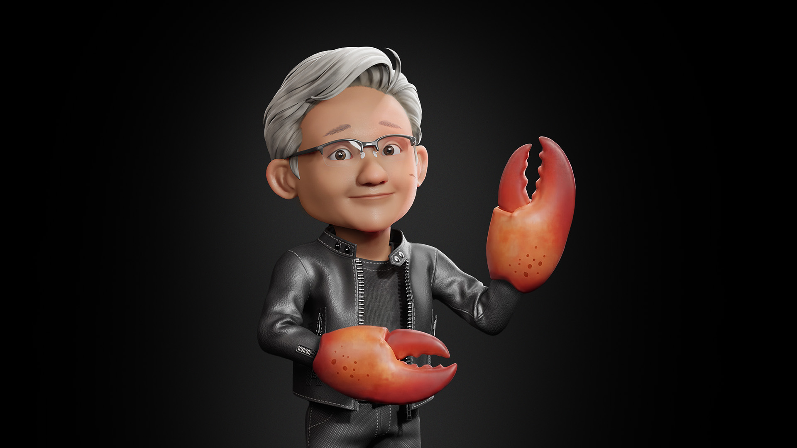

Nvidia가 오픈소스 AI 에이전트 프레임워크 OpenClaw에 엔터프라이즈 보안을 입힌 NemoClaw를 발표했습니다.
AI 에이전트 플랫폼의 경쟁 축이 성능에서 보안과 거버넌스로 이동하고 있습니다.
경영 리더는 자사의 AI 에이전트 전략에 보안 아키텍처를 포함해야 합니다.
AI 에이전트 도입하겠다면서 보안 정책은 '나중에'라고?
에이전트가 회사 데이터를 들고 나가는 것도 '나중에' 알게 될 것이다.
AI 에이전트를 사내에 도입하려는 기업에게 가장 큰 장벽은 성능이 아닙니다. 보안입니다. Nvidia가 GTC 2026에서 이 문제에 대한 답을 내놓았습니다.
Nvidia CEO 젠슨 황이 GTC 2026 기조연설에서 NemoClaw를 발표했습니다. OpenClaw에 엔터프라이즈급 보안과 프라이버시 기능을 추가한 오픈소스 플랫폼입니다. OpenAI도 2026년 2월 기업용 에이전트 플랫폼 Frontier를 출시했습니다. 가트너는 2025년 12월 보고서에서 AI 에이전트 거버넌스 플랫폼이 기업 도입의 핵심 인프라가 될 것이라고 분석했습니다. AI 에이전트가 '실험 도구'에서 '기업 인프라'로 격상되는 전환점입니다.
경영 리더가 NemoClaw 발표에서 읽어야 할 포인트는 3가지입니다.
첫째, AI 에이전트 플랫폼의 핵심 경쟁력이 '보안'으로 이동했습니다. Nvidia는 OpenClaw의 가장 큰 문제가 보안이라고 진단했습니다. NemoClaw는 에이전트의 행동 범위와 데이터 접근을 기업이 직접 통제할 수 있도록 설계되었습니다. 성능은 이미 충분합니다. 기업이 에이전트를 실제로 배포하지 못하는 이유는 통제 가능성의 부재입니다.
둘째, 오픈소스 에이전트 프레임워크가 기업 표준으로 격상되고 있습니다. 젠슨 황은 OpenClaw를 리눅스, HTTP, 쿠버네티스(컨테이너화된 앱을 자동 배포·관리하는 시스템)에 비유했습니다. 핵심은 기술 자체가 아닙니다. 오픈소스가 산업 표준이 되는 패턴의 반복입니다. 리눅스가 서버 인프라의 표준이 된 것처럼, AI 에이전트 프레임워크도 벤더에 종속되지 않는 표준 플랫폼을 향해 움직이고 있습니다.
셋째, 하드웨어 비종속 전략이 도입 장벽을 낮춥니다. NemoClaw는 Nvidia GPU 없이도 작동합니다. 클라우드 기반 모델을 로컬 디바이스에서 접근할 수도 있습니다. 기업 입장에서 기존 인프라를 유지하면서 AI 에이전트를 도입할 수 있다는 의미입니다.
AI 에이전트의 보안 아키텍처를 후순위로 미루면 비용이 빠르게 누적됩니다.
에이전트 보안 사고 시 대응 비용이 기존 IT 사고보다 큽니다. AI 에이전트는 자율적으로 판단하고 행동합니다. 데이터 유출이 발생하면 에이전트가 접근한 전체 시스템을 점검해야 합니다. 사후 대응 범위가 기존 소프트웨어 보안 사고보다 넓습니다.
보안 미비로 도입이 지연되면 기회비용이 발생합니다. 보안 정책 없이 파일럿을 시작한 기업은 법무·보안 부서의 반대로 프로젝트가 중단되는 경우가 많습니다. 도입 시점이 6개월 늦어지면, 그 기간 동안 자동화할 수 있었던 반복 업무의 인건비가 그대로 남습니다.
어떤 도구가 어떤 데이터에 접근하는지 목록으로 파악합니다. 고객 데이터, 내부 문서, 재무 정보 등 접근 대상을 분류합니다. (예상 1시간)
Nvidia 공식 페이지에서 설치 요건과 지원 환경을 확인합니다. 자사 인프라 환경(클라우드/온프레미스)에서 테스트 가능한지 판단합니다. (예상 30분)
우리 회사에서 현재 사용 중인 AI 도구 목록을 정리해 주세요. 각 도구별로 다음을 확인합니다: 1. 접근하는 데이터 유형 (고객 데이터, 내부 문서, 재무 정보 등) 2. 데이터 저장 위치 (클라우드/로컬) 3. 접근 권한 설정 여부 4. 보안 정책 적용 상태
AI 에이전트 도입 시 필요한 보안 요건을 사전 정의합니다. 에이전트의 데이터 접근 범위, 행동 로그 기록, 권한 제한 3가지를 최소 기준으로 설정합니다. (예상 30분)
기대 결과: AI 에이전트 도입 전 보안 체크리스트가 완성되고, 법무·보안 부서의 사전 동의를 확보할 수 있습니다.
NemoClaw는 아직 초기 알파 단계입니다. Nvidia도 공식 페이지에서 거친 부분이 있을 것이라고 밝혔습니다. 프로덕션 환경에 바로 적용하기에는 이릅니다. 테스트 환경에서 먼저 검증해야 합니다.
오픈소스 보안 플랫폼의 한계를 인식해야 합니다. 엔터프라이즈급 보안을 표방하지만, 커뮤니티 기반 오픈소스의 취약점 대응 속도와 상용 솔루션의 대응 속도는 다릅니다. 자사 보안팀의 역량과 운영 여건을 함께 고려해야 합니다.
벤더 중립을 표방하지만, 생태계는 Nvidia 중심입니다. NemoClaw는 Nvidia GPU 없이도 동작한다고 합니다. 그러나 NeMo, NemoTron 등 Nvidia 소프트웨어 스택과의 통합이 깊습니다. 장기적으로 벤더 종속 리스크를 평가할 필요가 있습니다.
AI 에이전트 전략에서 보안은 부록이 아니라 첫 장입니다. 지금 보안 아키텍처를 설계하는 기업이 에이전트 시대의 주도권을 잡습니다.
- Nvidia. (2026, March 16). "Nvidia announces NemoClaw." Nvidia Newsroom. https://nvidianews.nvidia.com/news/nvidia-announces-nemoclaw
- Szkutak, R. (2026, March 16). "Nvidia's version of OpenClaw could solve its biggest problem: security." TechCrunch. https://techcrunch.com/2026/03/16/nvidias-version-of-openclaw-could-solve-its-biggest-problem-security/